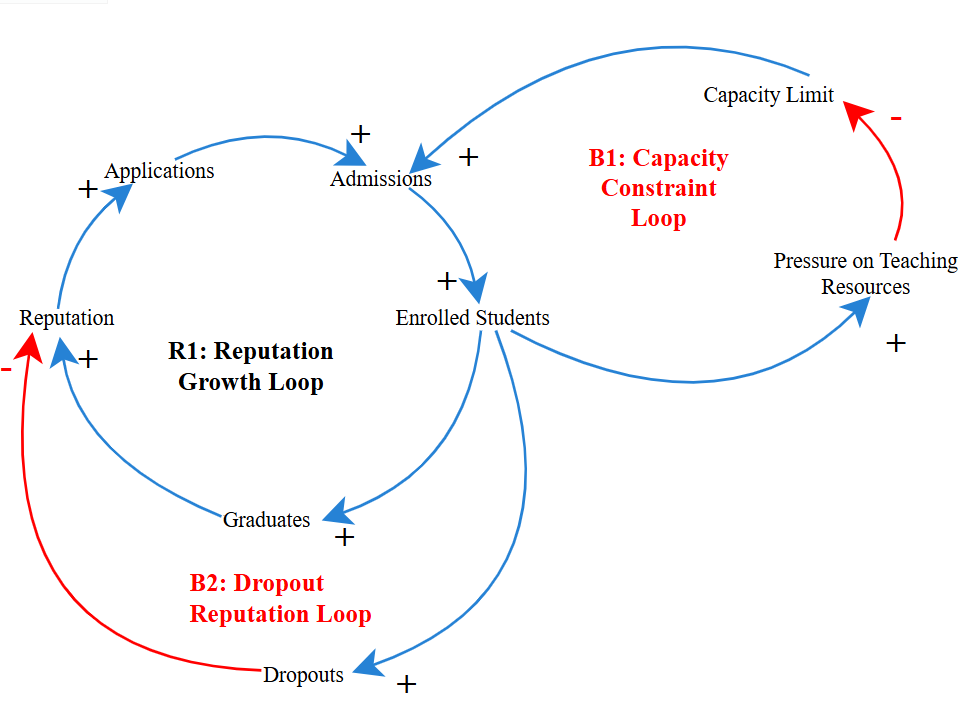
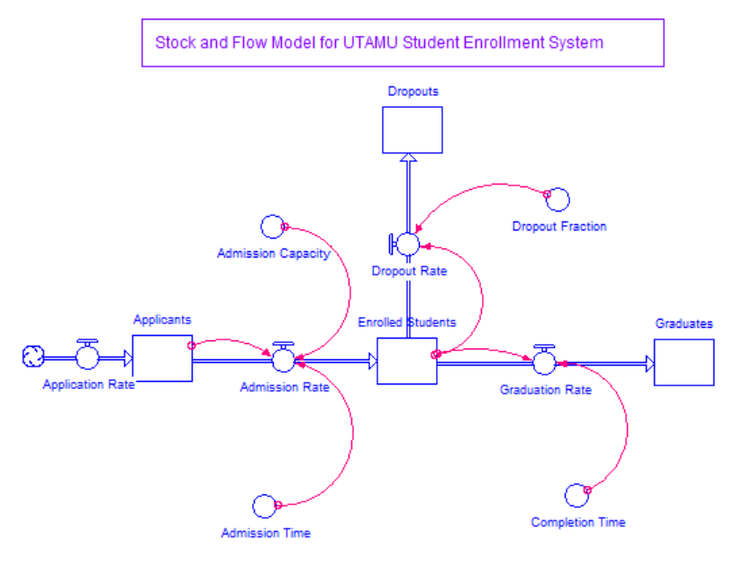
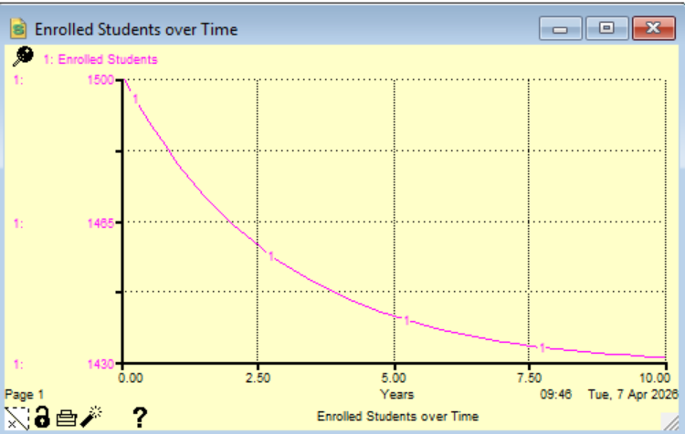
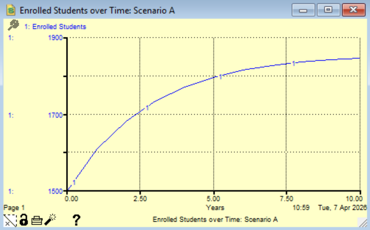
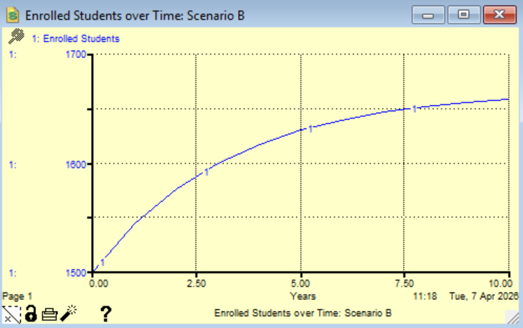

Overview
This project modelled the UTAMU student enrollment system using system dynamics techniques. The goal was to understand how variables like reputation, admissions capacity, dropout rates, and graduation rates interact over time — and to simulate how different policy interventions affect enrollment outcomes over a 10-year period.
STELLA
Visual Paradigm
Causal Loop Diagrams
Stock & Flow Modelling
Scenario Analysis
Causal Loop Diagram
The CLD identifies three feedback loops governing enrollment system behaviour. Two are balancing loops (constraining growth) and one is a reinforcing loop (amplifying growth).

Causal loop diagram — built in Visual Paradigm showing R1 Reputation Growth Loop, B1 Capacity Constraint Loop, and B2 Dropout Reputation Loop
R1 — Reinforcing
Reputation Growth Loop
Higher reputation → more applications → more admissions → more enrolled students → more graduates → higher reputation. A self-amplifying cycle.
B1 — Balancing
Capacity Constraint Loop
More enrolled students → pressure on teaching resources → hits capacity limit → constrains further admissions. Limits runaway growth.
B2 — Balancing
Dropout Reputation Loop
More enrolled students → more dropouts → damages reputation → reduces applications → fewer admissions. A self-correcting drag on growth.
Stock and Flow Model
The stock and flow model was built in STELLA, translating the causal structure into a quantitative simulation. Stocks (rectangles) represent accumulations — Applicants, Enrolled Students, Dropouts, Graduates. Flows (valves) represent rates of change — Application Rate, Admission Rate, Dropout Rate, Graduation Rate.

Stock and flow model — built in STELLA showing the complete enrollment system with all stocks, flows, and auxiliary variables
What I Did
Modelling
- Identified key system variables and feedback structures
- Built causal loop diagram in Visual Paradigm with 3 named loops
- Translated CLD into quantitative stock and flow model in STELLA
- Set initial values and defined rate equations
Simulation
- Ran base model simulation over 10-year period
- Designed Scenario A — intervention to improve retention
- Designed Scenario B — capacity expansion intervention
- Compared enrollment, dropout, and graduation outcomes across all three scenarios
Simulation Results — Three Scenarios
The model was run under three scenarios to compare how different policy interventions affect enrolled student numbers over 10 years.
Enrolled Students over Time

No intervention. Enrolled students decline from ~1,500 to ~1,430 over 10 years as the dropout and capacity balancing loops dominate.

Retention improvement intervention. Enrollment grows from ~1,500 to ~1,850 — the reputation reinforcing loop activates as dropout rates fall.

Capacity expansion intervention. Moderate growth to ~1,650 — expanding capacity allows more admissions but without retention improvement, gains are limited.
Scenario A outperforms Scenario B — addressing dropout is a higher-leverage intervention than expanding capacity alone
Outcome
Key Finding
Reducing dropout rates (Scenario A) is a higher-leverage intervention than expanding physical capacity (Scenario B) — producing 200 more enrolled students over 10 years
Systems Insight
The B2 Dropout Reputation Loop is the dominant constraint — without addressing it, capacity expansion only produces marginal gains
Decision Support
The model provides a quantitative basis for recommending student support and retention programmes over infrastructure investment
Method
Demonstrates how systems thinking reveals non-obvious policy implications that linear analysis would miss entirely